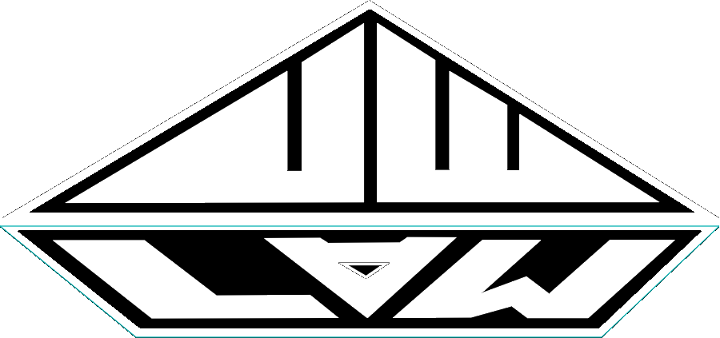

MORRIS HEIGHTS, BRONX — SERVING ALL 5 BOROUGHS
UWLAW ART is a custom mural studio based in the Bronx, painting walls across New York City — storefronts, lobbies, rooftops, blocks. If it has a wall, we have an idea.
ON THE WALLS
HOW IT WORKS
We walk the space, talk scale, budget, and timeline. Every wall has different light, texture, and traffic — we plan around yours.
Concept sketches and a full color comp before any paint touches brick. You approve the exact piece we're going to paint.
Full crew on site, working fast without cutting corners. Most storefront-scale murals wrap in 2–5 days depending on size and surface.
Sealed, protected, and photographed. The wall's yours — and it'll be on @uwlawart by the weekend.
QUESTIONS
The stuff people usually ask before booking a custom mural in NYC.
Yes — that's the whole business. Every mural we paint is designed from scratch for the wall and client it's going on. We're based in Morris Heights in the Bronx and work across all five boroughs.
Our projects run from around $250 for a small feature wall or sign-style piece up to $50,000 for large-scale, multi-day building murals. Price comes down to size, surface complexity, height/access needs, and turnaround time. We give a firm quote after seeing the wall.
We're based in Morris Heights, the Bronx, and take on projects across Manhattan, Brooklyn, Queens, Staten Island, and the rest of the Bronx. Projects outside NYC are handled case by case.
Most storefront-scale murals take 2–5 days. Small interior pieces can wrap in a single day. Large-scale exterior or building murals can run one to a few weeks depending on height, weather, and detail level.
Both. Interior work includes offices, restaurants, retail, and residential rooms. Exterior work includes storefronts, gates, rooftops, and full building walls, using paint rated for outdoor exposure.
Brick, cinder block, stucco, drywall, roll-down security gates, plywood, and most primed exterior surfaces. If a surface needs special prep or primer, we handle that as part of the quote.
Yes. Send photos and measurements of the wall through the contact form below and we'll give you a ballpark before scheduling an in-person walk-through.
The full portfolio is on @uwlawart and pulled live into the work section above — that's the most current look at finished walls.
Commercial work is most of what we do — storefronts, restaurants, gyms, offices, and brand activations for companies that want a wall that photographs well and gets talked about.
Yes, residential murals are common — kids' rooms, accent walls, building lobbies, backyard walls. Scale and pricing scale down accordingly.
Yes. If you already have a design, logo, or reference image, we'll adapt it to the wall's scale and surface. If not, our team designs the concept with you from the consult.
Painting a mural on private property you own or have permission to alter generally doesn't require a special permit, but landmarked buildings, certain commercial corridors, and building-height work can have additional rules. We'll flag it during the consult if your project needs anything filed.
Exterior work is done with exterior-rated acrylics and sealed with a UV-resistant topcoat so color holds up against sun, rain, and NYC weather. We can talk through expected lifespan and touch-up timing for your specific wall.
Yes, projects are booked with a deposit once the design and quote are approved, with the balance due on completion. Exact terms are laid out in the project agreement.
2–4 weeks is typical, more for large-scale or multi-wall projects and during peak spring/summer months when exterior work is in high demand.
Yes — building-scale murals are where the higher end of our price range comes in, factoring lift/scaffold access, paint volume, and crew time.
Yes, brand and logo murals for storefronts, offices, and pop-up activations are a regular part of the work — we'll match brand colors and typography to the wall.
Yes, surface prep — pressure washing, patching, priming as needed — is included in the scope so the finished mural holds up properly.
That's most projects. The design phase of our process is built for exactly this: we sketch concepts and a full color comp with you before any paint goes on the wall.
Yes, we offer touch-up service for wear, weather damage, or vandalism on murals we've painted. Reach out through the contact form and we'll assess what's needed.
Based in Morris Heights, the Bronx — working across all five boroughs. Projects typically run $250–$50,000 depending on size, complexity, and timeline. Tell us about the wall and we'll get back within 2 business days.